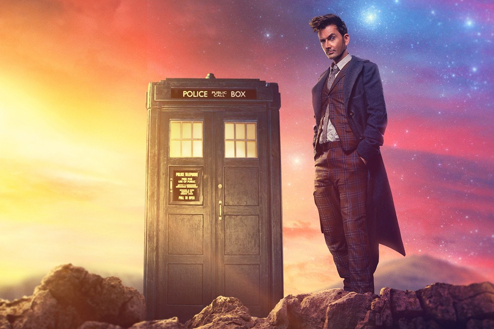

Minhas séries favoritas
- The office
- Doctor who
- Arcane
- American Horror Storys
The office
A série acompanha o dia-a-dia do escritório de uma fábrica de papel, a Dunder Miffin, localizada em Scranton, na Pensilvânia. Mostra o chefe Michael tentando estimular seus insatisfeitos funcionários em meio a diversas crises e comportamentos peculiares.
Eu adoro o estilo de comédia sendo o mais engraçado os momentos que o chefe Michael é muito sem noção com varios momentos vergonha alheia, mas também tem varios personagens carismaticos com personalidades bem distintos.

Doctor who
A série retrata as aventuras do Doutor, um Senhor do Tempo alienígena do planeta Gallifrey, que explora o universo em sua máquina do tempo, uma sensível nave espacial conhecida como TARDIS (time and relative dimension in space), cuja aparência exterior se assemelha a uma cabine de polícia londrina de 1963.
Doctor who foi a série que me fez gostar mais de ficção ciêntifica, cada episodio uma aventura diferente e vendo diversos tipos de alieniginas que representam perigo à eles, trilha sonora incrivel e vilões memoraveis, ainda tem episódeos focados no passado mostrando figuras historicas famosas como: Rosa Parks, William Shakespeare, Van Gogh entre outros.
Arcane
Arcane é a nova animação da Netflix baseada em League of Legends, jogo de sucesso da Riot Games que estreou na Netflix. Composta por três episódios iniciais, a série vai contar a história da rivalidade entre duas irmãs, Jinx e Vi e nos mostrar alguns cenários e personagens icônicos e familiares de LoL.
Eu gosto bastante do universo de league of legends e sempre gostei dos personagens e suas histórias, gostei muito o que os criadores re-inventaram a história dos personagens de um jeito incrivel para virar uma série, personagens como a Jinx que não tinha seu passado muito bem explicado.
American horror storys
Criado por Ryan Murphy e Brad Falchuk, American Horror Story é um drama de antologia que redefiniu o gênero de terror apresentando contos que se passam desde um asilo assustador, coven de bruxas, show de horrores itinerante, um hotel assombrado e o próprio apocalipse.
Não sou muito de assistir séries de terror, mas achei legal American horror storys, cada temporada tem seu estilo próprio e mesmo usando os mesmos atores trás um sentimento diferente dos papeis que fizeram em uma temporada anterior.
Sites de pesquisa